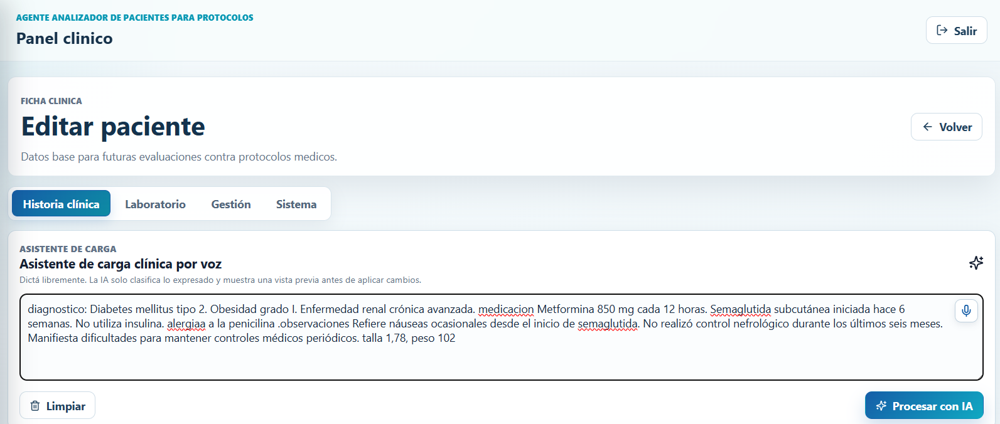
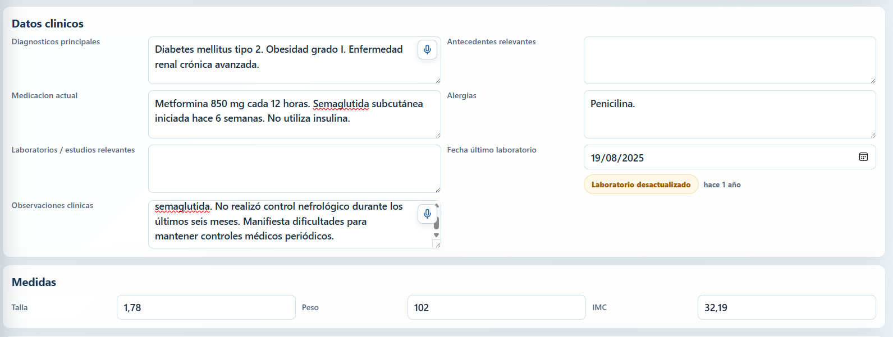
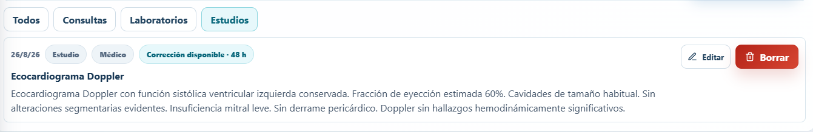
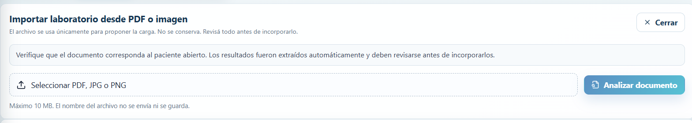
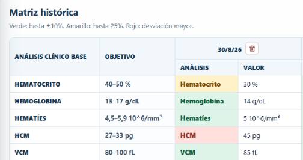
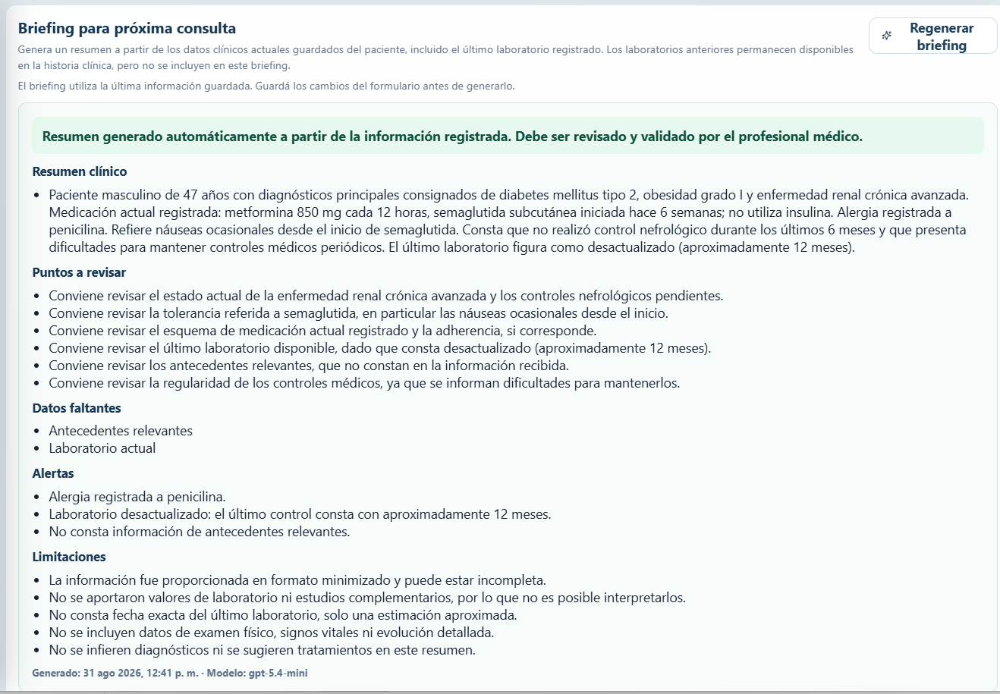
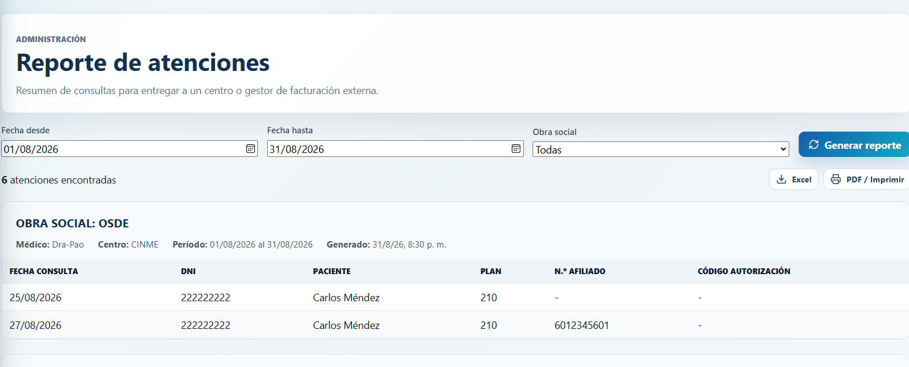

La información importante, antes de que se pierda entre pantallas.
Organizar pacientes, consultas, estudios y laboratorios para recuperar contexto clínico con menos trabajo administrativo.

Empezar el día sabiendo qué requiere atención.
Pacientes activos, consultas próximas, seguimientos y laboratorios vencidos aparecen en una sola vista. El objetivo no es mostrar más datos: es mostrar primero los que requieren una acción.
Hablar o pegar. Después, revisar.
El médico puede dictar o pegar información clínica en un único campo. La IA propone cómo organizarla dentro de la ficha; el profesional conserva el control antes de guardar.




Consultas y estudios en contexto.
La cronología permite recuperar rápidamente qué ocurrió, qué conducta se indicó y qué estudio acompañó la evolución. La ficha deja de ser un depósito de texto para convertirse en una línea de tiempo útil.
Un PDF deja de ser un archivo aislado.
El análisis puede incorporarse desde un PDF. El sistema extrae valores y los presenta para revisión antes de sumarlos a la historia del paciente.


Ver la tendencia. No abrir cuatro estudios para compararlos.
La matriz histórica reúne resultados de distintas fechas y los compara con los objetivos definidos para ese paciente. Los colores ayudan a detectar cambios sin ocultar los valores originales.


Antes de la consulta, recuperar el contexto.
El briefing reúne antecedentes, tratamientos, laboratorios recientes, datos faltantes y puntos a revisar. No toma decisiones clínicas: reduce el tiempo dedicado a reconstruir la historia antes de atender.
La consulta termina. El trabajo administrativo también debería simplificarse.
El reporte de atenciones organiza las consultas por obra social e incluye los datos necesarios para preparar la rendición o entregarla al centro que gestiona la facturación.

Menos tiempo buscando información. Más contexto al atender.
Una vista organizada de pacientes, consultas, estudios y tareas pendientes, diseñada para acompañar el trabajo cotidiano del médico.